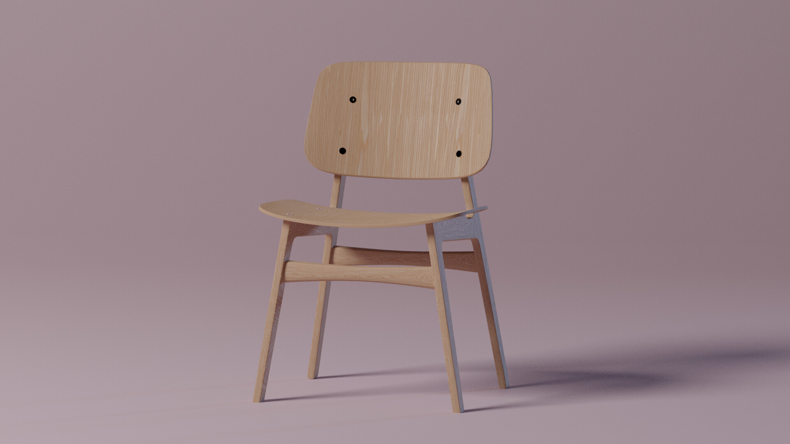
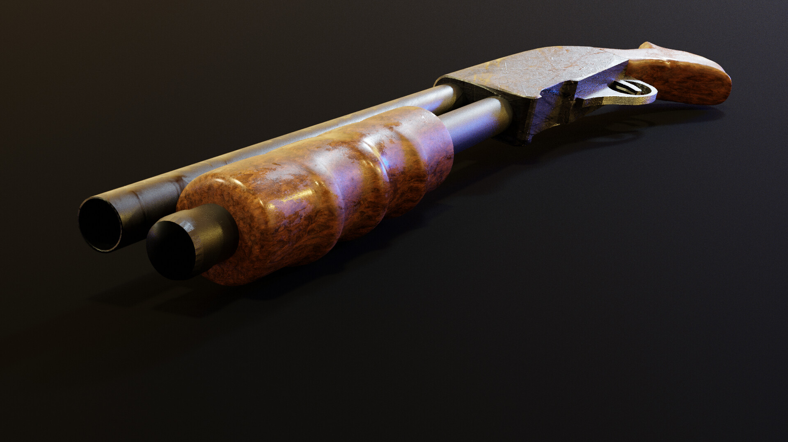
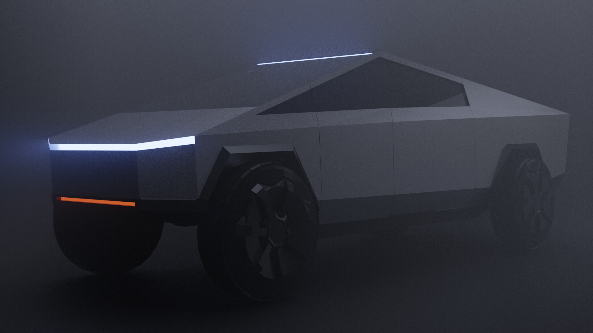

Omar Wahid
A technical game designer, Level designer, web developer, programmer, automotive engineer, 3D/2D artist, and YouTuber.
About Me
I am Omar Wahid, a passionate technical game designer with extensive experience in AAA titles and indie projects. Leveraging my engineering background, I bring a unique perspective to gameplay mechanics, balance, and user experience. Let's create immersive experiences together.
Work with World of Tanks
World of tanks is the leading world defacto tank combat simulator, Wargaming - the developing company - is billion dollar company.
100 Million total downloads only on GooglePlay, and it's not even the main revenue stream for the franchise of World of tanks.

My role was to develope gameplay dynamics and vehicle physics, balancing over 600+ tank permutations.

Improved user interface through prototyping, with animated representation of damage in the Health bar, showing the damage in a more engaging way.

Built rapid prototypes and deployed multiple iterations weekly to improve gameplay experience. In this example I created a camera movement system that allows player to see behind them when moving back, while smoothing the camera animation and not impact the balance of shooting.
Indie Projects

"Space is Hard" is Turn-based space RPG game for Android and PC, focusing on story and atmosphere. the game was solo developed
The demo was highly praised by players, reaching a score of 4.9 on GooglePlay.

"Cemetary for the invaders" is a game about resisting colonial powers. Showing the devistation that fell upon the people under fascism.

Lead the Libyan resistance against the Italian fascists. the game was made completely remotely with a small team of devs and artists, with a unique unexplored theme, the Arabian desert.
As part of the "GameMakerToolkit" game jam, a team of 6 devs built this game, with the theme of "Randomness".

"Earth defence cannon" Fast-paced arcade shooter available for browsers, combining classic mechanics with pixel art style. the game was solo developed.

"The root of all evil" is a game about money and the idea of exponential growth. the game was solo developed.
YouTube Career
As projct "GameDoser", I have gained over 68,000 subscribers and 10 years of content creation experience, including dev-log series "The Game Professor." My channel features game reviews, development insights, and gameplay analysis.
Pet projects

Built in Unreal Engine, with C++, a 3D third person shooter with realisitc visuals and futuristic setting, I built this right after learning C++ which I did only in a total of 9 days.

I passionately build levels for the games I love, and Half Life 2 provided me with the best - although a little outdated - tools to build levels that is fun and interesting.
2D and 3D Art
With capabilities in Photoshop, Corel draw and Blender3D, plus knowledge in video editing and animation, I create necessary art for my prototypes.
  